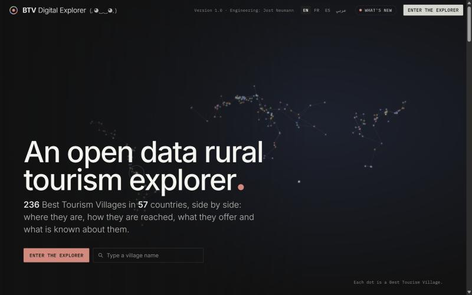
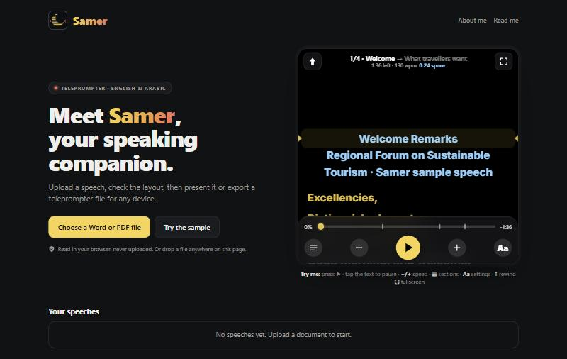
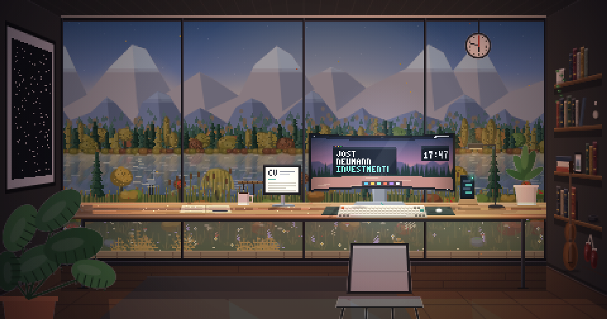

Tourismus · Investitionen · Entwicklung · Offene Daten
Jost Neumann
Programmleiter mit mehr als zehn Jahren Erfahrung in internationalen Organisationen, Unternehmensstiftungen und gemeinnützigen Organisationen, tätig an der Schnittstelle von Tourismus, Investitionen und Entwicklung, mit einem Bekenntnis zu offenen Daten und evidenzbasierten Entscheidungen.
Profil
Jost Neumann hat seinen Dienstsitz in Riad, Saudi-Arabien, und koordiniert das Programm „Tourism for Rural Development“ von UN Tourism, der Sonderorganisation der Vereinten Nationen für Tourismus. Die Funktion umfasst Advocacy, Beratungsleistungen sowie technische und finanzielle Unterstützung für die Mitgliedstaaten, die Koordinierung des Netzwerks Best Tourism Villages by UN Tourism (BTV) und des Kleinzuschussprogramms „Tourism for Rural Development Small Grants“.
Von 2018 bis 2025 hatte Jost Neumann leitende Funktionen im Programmbereich der TUI Care Foundation inne. Als Programmdirektor (2022–2025) verantwortete Jost Neumann die Investition von rund 40 Mio. EUR philanthropischen Kapitals in Destinationsprojekte zu Unternehmertum, Bildung und Naturschutz sowie die Mobilisierung von mehr als 12 Mio. EUR von institutionellen Gebern. Mehrere Projekte wurden ausgezeichnet, unter anderem mit dem Responsible Tourism Award und dem Deutschen Nachhaltigkeitspreis.
Zu den früheren Stationen zählen Funktionen in den Bereichen wirtschaftlicher Wiederaufbau und Kommunikation beim International Rescue Committee, verantwortungsvolle Investitionen im östlichen und südlichen Afrika sowie Strategiearbeit beim Vodafone Institute. Die Tätigkeit verbindet Fachkenntnisse in Philanthropie, Impact Investing und innovativer Finanzierung mit Felderfahrung in Südostasien, Afrika und dem Nahen Osten.
Fachgebiete
Tourismus
Nachhaltiger Tourismus und ländliche Entwicklung
Programmgestaltung, technische Unterstützung und Aufbau von Partnerschaften für Tourismus als Motor inklusiver ländlicher Entwicklung.
Investitionen
Impact Investment und Philanthropie
Philanthropisches Kapital, Förderportfolios, wirkungsgebundene Finanzierung (Impact-Linked Finance) und Finanzierung sozialer Wirkung, einschließlich des Oxford Impact Investing Programme (Saïd Business School).
Entwicklung
Entwicklungszusammenarbeit
Programmstrategie, Monitoring und Evaluierung sowie Ressourcenmobilisierung mit Regierungen, Stiftungen, Unternehmen und gemeinnützigen Organisationen in Südostasien, Afrika und dem Nahen Osten.
Offene Daten
Offene Daten und digitale Werkzeuge
Offene Daten, Dashboards und interaktive Karten, die Programmevidenz transparent machen und evidenzbasierte Entscheidungen unterstützen.
Berufserfahrung
-
März 2025 – heute
Programmkoordinator, Programm „Tourism for Rural Development“
UN Tourism · Riad, Saudi-Arabien
- Koordiniert das Kleinzuschussprogramm „Tourism for Rural Development Small Grants“.
- Leitet ein multidisziplinäres Team von Fachleuten, das Advocacy, Beratungsleistungen sowie technische und finanzielle Unterstützung für Mitgliedstaaten in allen Weltregionen erbringt.
- Koordiniert das Netzwerk Best Tourism Villages by UN Tourism (BTV), einschließlich technischer Unterstützung und des Aufbaus von Partnerschaften.
-
Februar 2022 – Februar 2025
Programmdirektor
TUI Care Foundation · Berlin, Deutschland
- Investierte rund 40 Mio. EUR philanthropischen Kapitals in Destinationsprojekte zu Unternehmertum, Bildung und Naturschutz.
- Verantwortete ein globales Förderportfolio in allen Weltregionen mit Projekten zu Naturschutz, Unternehmertum, Bildung, Kulturerbe und Impact-Finanzierung für Unternehmen.
- Entwickelte die Programmstrategie und den Rahmen für Monitoring und Evaluierung der Stiftung.
- Projekte erhielten unter anderem den Responsible Tourism Award, den Deutschen Nachhaltigkeitspreis und den Responsible Travel Award.
-
Juni 2018 – Februar 2022
Leiter Wirtschaftsentwicklung
TUI Care Foundation · Palma de Mallorca, Spanien
- Entwickelte ein Portfolio zuschussfinanzierter Projekte zu nachhaltiger Landwirtschaft, Abenteuertourismus, Unternehmertum und Tourismusentwicklung in Ländern mit niedrigem und mittlerem Einkommen in verschiedenen Weltregionen.
-
Mai 2017 – Juli 2018
Kommunikationsreferent; Referent für ländliche Lebensgrundlagen
International Rescue Committee · Berlin, Deutschland
- Baute die Kommunikationsinstrumente des Büros auf, darunter die Website und die Social-Media-Kanäle, und führte zwei Advocacy-Kampagnen durch.
- Tätig in der globalen Economic Recovery and Development Unit (wirtschaftlicher Wiederaufbau und Entwicklung).
-
Mai 2015 – April 2017
Manager für verantwortungsvolle Investitionen
Amatheon Agri Holding N.V. · Berlin, Deutschland
- Entwickelte die Nachhaltigkeitsstrategie für die landwirtschaftlichen Betriebe im östlichen und südlichen Afrika und koordinierte zwei Nachhaltigkeitsbeauftragte vor Ort.
- Vertrat das Unternehmen in Fragen der Nachhaltigkeit, verantwortungsvoller Investitionen und des Impact Investment.
-
Oktober 2013 – Dezember 2014
Frühere Funktionen
Amatheon Foundation · Vodafone Institute · Berlin, Deutschland
- Research Fellow, Amatheon Foundation: Gemeindebefragungen und drei Monate Feldforschung im östlichen und südlichen Afrika zu Mobiltechnologie und Landwirtschaft.
- Strategie und Programme, Vodafone Institute.
Ausbildung
Master of Arts, Zukunftsforschung
Freie Universität Berlin · 2015
Bachelor of Arts, Kultur und Technik
Technische Universität Berlin · 2012
Zertifikate
Impact-Linked Finance
Roots of Impact · 2022
Financing for Social Impact
European Venture Philanthropy Association · 2021
Oxford Impact Investing Programme
Saïd Business School, University of Oxford · 2021
Cash Transfer Programming
Humanitarian Leadership Academy · 2018
Beratende Funktionen
Vorsitzender des Beirats
FINDING XY · 2021–2024
Mitglied des Beirats
Purple Elephant Ventures · 2021–2024
Mitglied des Beirats
The SHIELD · 2023–2024
Mitglied des Beirats (Vertreter der TUI Care Foundation)
Best Tourism Villages by UN Tourism · 2023–2024
Mentor
Enpact e.V. · 2019–2021
Beiträge
Ressourcen
Publikationen, Vorträge und Medienbeiträge, die neuesten zuerst. Beiträge, die in offizieller Funktion veröffentlicht oder gehalten wurden, sind zu Referenzzwecken verlinkt.
Publikationen
Bericht
Sustainable Tourism R&D: Systemic Transformation and Scalable Intelligence
UN Tourism und UNDP · September 2026 · Mitautor, gemeinsam mit Kai Partale, Mirko Ebelshaeuser und Ibrahim Ahmed Abdou
Bericht
Leveraging Tourism for Inclusive and Resilient Rural Communities – A Collection of Good Practices on Social Sustainability from the Best Tourism Villages Network by UN Tourism, Volume I: Social Sustainability
UN Tourism · August 2026 · Koordinator
Bericht
Monitoring Report of the 2021 Best Tourism Villages by UN Tourism – Progress, Successes and Challenges
UN Tourism · März 2026 · Koordinator
Vorträge und Podien
Vortrag
Presentation on the Tourism for Rural Development Programme
13. Sitzung des OIC/COMCEC Private Sector Tourism Forum, „Tourism and Rural Development in OIC Countries“ (virtuell) · 8. Oktober 2025 · Zusammengefasst im Sitzungsbericht (Ziff. 10)
Podium · Video
Sustainable Rural Tourism: A Foundation for Biodiversity Preservation and Gender Equality
ITB Berlin Convention · März 2024 · Podiumsteilnehmer als Programmdirektor der TUI Care Foundation, mit Vortragenden von GIZ, UN Tourism und aus der Wissenschaft
Gespräch · Video
Official launch of the 2021 Social Entrepreneurship Competition in Tourism
Social Entrepreneurship Competition in Tourism · 8. März 2021 · Gespräch mit dem Gründer des Wettbewerbs und einem Jurymitglied, als Vertreter der TUI Care Foundation
Medien und Berichterstattung
Videointerview
China leads UN Tourism's Best Tourism Villages list
CGTN · 7. August 2026
Interview
How the Middle East is using tourism to create jobs in rural villages
Fast Company Middle East · 31. März 2026
Offizielle Meldung
UN Tourism Celebrates Rural Destinations in Saudi Arabia under the Best Tourism Villages Initiative
UN Tourism · technische Mission, 14.–17. September 2025 · Übergabe der Best-Tourism-Villages-Plakette gemeinsam mit der Leitung des Regionalbüros für den Nahen Osten
Interview
Aid for LDCs to spur Lao tourism development
Vientiane Times · März 2023 · Auf der Fünften Konferenz der Vereinten Nationen über die am wenigsten entwickelten Länder (LDC5), Doha
Berichterstattung
Pikala among the finalists of UNWTO's second Global Startup Competition
TUI Care Foundation · 22. Januar 2020 · Unterstützte einen Finalisten und half einem siegreichen Gründer bei der Vorbereitung des Pitches
Labor
Kleine Werkzeuge und Experimente. Es handelt sich um persönliche Projekte: Ideen, Gestaltungsentscheidungen, Tests und abschließende Prüfungen stammen von Jost Neumann selbst.
-

Internes Arbeitsinstrument · Offene Daten
BTV Digital Explorer
Ein internes Arbeitsinstrument zur Auswertung offener Daten zu den 236 Best Tourism Villages by UN Tourism (BTVs) in 57 Ländern. Es führt frei verfügbare Datensätze zusammen, viele davon von internationalen Organisationen gepflegt, zu Siedlungstyp und Bevölkerung, zur Erreichbarkeit von Städten und Verkehrsverbindungen sowie zu internationalen Auszeichnungen wie UNESCO-Stätten und Schutzgebieten. Die Karten sind so gestaltet, dass sie den kartografischen Konventionen der Vereinten Nationen folgen.
Internes Arbeitsinstrument, nicht öffentlich -

Werkzeug · Web-App
Samer, ein Begleiter für Reden
Wandelt eine Rede im Word- oder PDF-Format in einen Teleprompter im Browser um. Abschnitte und Kernbotschaften werden automatisch erkannt und bleiben bearbeitbar, Hinweise für die vortragende Person werden nicht vorgelesen, das Tempo richtet sich nach dem Zeitfenster, und eine Rede lässt sich per Link oder QR-Code an ein Telefon senden. Die Anwendung erkennt Arabisch und funktioniert offline. Der Name bedeutet auf Arabisch eine Begleitung im abendlichen Gespräch.
Private Vorschau · Code auf GitHub -

Website · Pixel-Art
Dieser Raum
Die Szene wird Pixel für Pixel in Code gezeichnet. Licht und Jahreszeiten richten sich nach der lokalen Uhrzeit und dem Datum der Besuchenden, Tiere und Wetter erscheinen von Zeit zu Zeit, ein gerahmter Druck zeichnet in einer einzigen Linie Hommagen an berühmte Werke, und auf Wunsch erklingt eine generierte Klangkulisse aus Regen und Naturgeräuschen. Es werden keine Bilder, Schriften oder Skripte von Dritten geladen.
Oktober 2026
Kontakt
Für den fachlichen Austausch ist eine Kontaktaufnahme per E-Mail oder über LinkedIn willkommen.
Die auf dieser Website geäußerten Ansichten sind persönlicher Natur und spiegeln nicht notwendigerweise die Ansichten derzeitiger oder früherer Arbeitgeber wider.